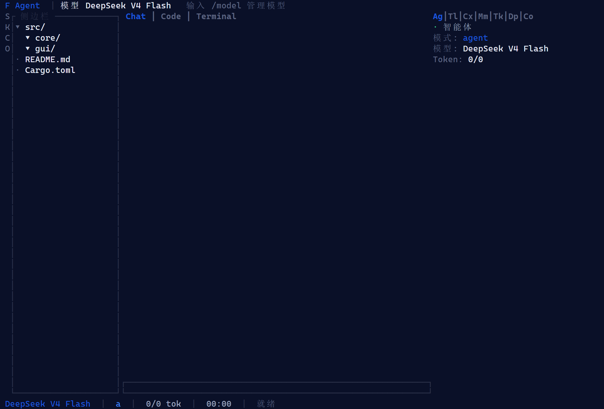

一个核心，两种外壳
Rust 内核同时产出库与二进制，CLI 与 Tauri 桌面共用同一引擎——桌面端不另起后端进程。
core/ · gui/src-tauri/
0.2.17安装包内含离线 WebView2，断网也能装。看下载与校验 →
Agent 运行时、分层记忆与幻觉护栏写进同一个 Rust 核心，编译成一个本地优先的可执行文件。 内嵌网关只监听回环地址。往下是 85 秒——跟着鼓点走的那种。
提交后直接带进下面的真实输入框跑一遍。演示在浏览器内运行，不联网、不发送内容。
THE FILM · 85 SECONDS
背景音乐是工作台内置的 focus-pulse.mp3。拍点由脚本分析音频得出（56 BPM，相位 0.778s），
每一幕的切换都对齐到真实拍点，而不是“大概每 12 秒换一张”。
MARGUERITE · 0.2.17
本地优先的桌面 Agent 工作台

REAL WORK,
NOT A CHAT BUBBLE
真实会话 · 工具回执 · 过程可见

MAKE IT
YOURS
主题 · 壁纸 · 桌宠 · 六种语言
ONE ENGINE,
FOUR DOORS
换界面不换引擎 · 20 条路由四处同源
01
LOCAL
FIRST
只监听 127.0.0.1:18790
02
SHOWS
ITS WORK
工具回执 · 完成门禁 · 台账可回放
03
ONE
BINARY
Rust 内核，桌面端不另起后端
NOT ANOTHER
CLOUD TAB
不是又一个云端标签页


INSTALL LIKE
A FILM
片头播完一整遍，才打开安装界面
已暂停 · 点画面继续
播放 85 秒 · 卡点版
音乐：focus-pulse.mp3（56 BPM）。画面为真实界面实录，交互按演示节奏重放。
浏览器拦了自动播放，点这里开始并开启声音。
你的系统开启了「减少动态效果」，短片已换成静帧序列。
ONE ENGINE · FOUR ENTRIES
命令行、终端工作台、桌面端、Web 控制台，跑的是同一个 Rust 核心。换界面不换引擎， 20 条 CLI 路由在哪一个入口里都是同一套语义。
从 doctor 到 export-diagnostics，20 个子命令在 argv.rs、路由表与测试断言三处同步——帮助里列得到的，就一定跑得到。
$ marguerite-core doctor
[OK] gateway bind 127.0.0.1:18790
$ marguerite-core capabilities --json
{"ok":true,"data":{"routes":20,"engines":["rust","py"]}}
完整清单见仓库 docs/cli-reference.md。
$ marguerite-core --help
doctor · model · mcp · skills · session
exec · deploy · serve · sandbox · subagent
team · browser · chat · gateway · goal
capabilities · cache · dispatch · games
export-diagnostics
[OK] 20 个子命令，帮助 ↔ 路由表 ↔ 测试断言同源
帮助里列得到的，就一定跑得到——这条由 program.rs 的断言守着。
ratatui 渲染的终端界面：侧栏文件树、Chat / Code / Terminal 三视图、右侧智能体状态与 token 计数。没有真终端也能复现——截图由 core/examples/tui_frame.rs 用 TestBackend 渲染真实一帧生成。
Windows 与 CI 都能跑出同一帧，宽度逐格校验。

Tauri 壳只负责开窗与加载回环网关地址，界面就是 Web 控制台本身。内核静态链接进同一个二进制——桌面端不另起后端进程。
安装包内含离线 WebView2，断网也能装。
Vue3 控制台由内嵌网关在 127.0.0.1:18790/control/ 回环托管，不开放公网。六种界面语言、智能中枢与用量台账都在这一层。
前端只在 webui/ 一处维护，桌面端与浏览器打开的是同一套界面。
REAL INTERFACE
聊天与设置都在「玛格丽特·星夜」主题、星夜壁纸、桌宠在位的前提下截取。滚动时镜头缓慢推近，细节留在原处。


OPERATION DEMO
下面这块是真的输入框：你可以自己打字，也可以点「示例」。发送后按真实节奏流式生成，并先落一条工具回执。
还没有消息。写一句，然后按发送。
想换一句？直接改上面的输入框，或按 示例。
WHY DIFFERENT
不比参数，只比「东西在哪里跑、过程能不能看见、结果能不能复核」。
对比仅描述产品形态差异，不含对任何第三方产品的评测或评分。Marguerite 一列的每条都对应仓库里可复跑的命令或可在界面中看到的面。
CAPABILITIES
不是功能清单，是写进代码、能在你自己机器上验证的事实——每张卡都标注了它住在仓库哪个目录。
Rust 内核同时产出库与二进制，CLI 与 Tauri 桌面共用同一引擎——桌面端不另起后端进程。
core/ · gui/src-tauri/
内嵌网关默认只监听 127.0.0.1:18790。局域网内其他机器扫不到，你的代码不为了「检索」离开这台机器。
core/src/gateway/ · 451 条 RPC 方法声明
感知、短期、长期三层记忆。长期记忆用本地特征哈希向量化做余弦检索，不依赖外部 embedding 服务。
core/src/memory/
语法、语义、事实、契约四道闸依次过闸。不过闸就进修复循环：规则修复最多两次，仍不过再交给模型。
core/src/governance/ · PlanGate
团队 / 蜂群 / 专家团多形态编排：成员注册表、实时动向事件流、团队看板泳道。每张卡都来自真实进度帧，后端没给的显示「未报告」。
core/src/orchestration/ · team.members
任务拆步成 DAG，逐步执行、产物落盘；每步落盘后进入「待审查」，由你给出通过或打回——最终决策权在人。计划运行支持人工逐步推进。
core/src/plan/ · plans.run.advance
Windows ConPTY / Unix openpty 真 PTY（取自 wezterm 的 portable-pty），shell 自动发现与档案化，分层沙箱执行。不是「两根管道 + cmd」。
core/src/terminal/ · core/src/sandbox/
每个产物登记造册、可回放、可在编辑器内联修改；/handoff 把会话产物清单写成工作区交接单，下一个模型或会话直接承接，不经对话传文件。
core/src/gateway/artifacts.rs · artifacts.*
ENGINEERING DISCIPLINE
十三道架构守卫在每次 npm run typecheck 时全部执行，任何一道变红都不许声称「完成」。这一节的每个数字都是源码树实测。
ls webui/src/views/*.vuels -d core/src/*/agent.selfcheck · tools.countnpm run typecheck后端没给的字段，界面一律显示「未报告」——不用 0 冒充、不用猜测补位。空态必须给出真实原因（单选直答 / 尚未派活 / 读取失败），绝不静默。
门禁脚本里被跳过的检查在汇总中单独列出，永远不计入通过；任何「完成」声明都必须挂着当轮新鲜的退出码 0。
界面模板里的硬编码中文被棘轮基线锁死（当前 380 行）：只许降不许升，新文案必须走 i18n 六语言键。漏一个键，六语言对齐守卫直接变红。
2026-10-26 的独立审计结论原话：「这个应用比文档声称的完整得多」——审计同时发现文档里两项「待办」早已完成。照抄过期文档会返工，所以这里只写实测。
CASE FILES · FIELD NOTES
每一例都附工作区结构、任务节点、留下的产物，以及一条能在本机复现的命令。这里展示的不是「用了什么工具」，而是「怎么把一个问题查到底」。
工作区结构
core/src/pyengine/sidecar.rs pyengine/src/opensquilla/gateway/middleware.py webui/e2e/settings-modal.spec.ts
任务节点
/health，21 次拿到 429/health 连打 5 次全 200，/api/config 第 2 次 429）产物
_LIVENESS_PATHSclassify_health（3 次失手 + 10 秒复核）rate_limited_probe_still_proves_liveness/handoff
「偶发红」先量概率再改代码：21/90 是根因，加超时是掩盖。看门狗的判据必须能区分「没回答」与「回答慢」。
cargo test -p marguerite-core --lib rate_limited_probe_still_proves_liveness工作区结构
webui/src/components/pet/pet3d/Pet3DScene.ts webui/src/components/pet/petSpec.ts webui/src/components/pet/petSpec.test.ts
任务节点
dotNL × 0.5 + 0.5，而 dotNL 已被截断到 0–1 → 受光面只能落在贴图后半段产物
PET_TOON_RAMP + toonRampBytes()/handoff
「看起来不对」也要去读引擎源码。单点采样配一个形式错误的曝光公式，等于一个永远绿的守卫。
cd webui && npx vitest run src/components/pet/petSpec.test.ts工作区结构
core/src/gateway/approvals.rs core/src/chain/executor.rs pyengine/src/opensquilla/gateway/app.py
任务节点
GET /api/approvals 回 pending: []POST /api/approvals/resolve 回 404；复查侧车队列仍是「待裁决」产物
merge_pending + forward-on-missregistry_status / missing_statusapproval_survives_console_rest_round_trip · dispatch_answers_status_for_rust_raised_approval/handoff
「界面有反馈」不等于「后端生效」。跨进程状态必须有统一的可观测出口；每一条查询只能由持有方作答——另一侧如实说「没有」，会被读成「不存在」。
cargo test -p marguerite-core --lib gateway::approvals工作区结构
core/src/workspace.rs core/src/security/scanner_l3.rs core/src/tools/builtin/fs.rs core/src/guard/trust.rs
任务节点
vault.json 早已 0600，而 .env、gateway-token、credentials.json 按默认 umask 落盘grep 的遍历也不过掉点文件，于是读文件工具能把 .env 整份读进上下文，再随下一次请求发往服务商grep／codebase_search 跳过同一批；三处补 0600产物
is_credential_file（.env 模板仍可读，写入仍放行）check_read_multi · harden_private_fileargs_fingerprint + TTL（只存指纹，不存原文）/handoff
安全审计要跟着「数据实际躺在哪」走，而不是跟着「我们以为默认值是什么」走。已知边界照实写：vault.json 的派生密钥与盐同文件，静态保护靠权限而非口令。
cargo test -p marguerite-core --lib guard_denies_credential_file_reads_and_searches工作区结构
scripts/verify.sh scripts/check-readme-claims.py .github/workflows/ci.yml
任务节点
verify.sh 的全量块，数真实调度项，再与两份 README 的闸门总数比对，不等即红产物
check-readme-claims.py（中英两份 README 硬事实比对）check-secrets.py（只扫将随提交落地的文件，白名单要求自证）/handoff
文档会腐烂，门禁不会。把「对账」写成脚本，让它替你记住——包括记住「门禁自己有没有被接线」。
python3 scripts/check-readme-claims.py工作区结构
webui/src/composables/chat/useChatSessionSubscription.ts webui/src/composables/chat/useChatRpcEventHandlers.ts webui/e2e/approval-card.spec.ts
任务节点
产物
reappendInterruptFrames（重置后重挂，幂等）re-appends interrupt records…（变异即红）a late authoritative idle snapshot keeps the approved outcome row/handoff
「偶发」不是不查的理由，而是要换一种造法：把不可控的时序变成可控的延迟。另外，限速工具没覆盖的传输层会给你假绿——一个不改代码也能过的回归用例，等于没有。
cd webui && npx playwright test e2e/approval-card.spec.ts -g "late authoritative idle snapshot"LOCAL FIRST · THREE PROMISES
三条都能在你自己的机器上当场验证，验证方式就写在卡片里。
01 · 回环
内嵌网关默认绑定 127.0.0.1:18790，同一局域网里的其他机器扫不到这个端口。你的代码不为了「检索」离开这台机器。
验证：另一台机器上 telnet <本机IP> 18790，连不上才对。
02 · 离线
安装包内含离线 WebView2，安装不需要联网。接本地模型时推理也完全离线；接云端提供方时才需要网络。
验证：拔掉网线装一遍，装完直接打开。
03 · 可复核
版本号 13 处同步、安装包 SHA256、25 项发版门禁——下面证据区的每个数字，都能在仓库里跑同一条命令复核。
验证：bash scripts/verify.sh --clean --all，全绿才算数。
STORY · 一个人的开发史
三年，一个人，从「写代码」到「造一台自己愿意每天打开的工作台」。这一页不讲卖点，只讲账。
写业务、带项目、上课。工具换了一茬又一茬，结论却越来越清楚：每个助手都只懂你正打开的那一个窗口——切走就忘，关掉就散，换台机器就等于从零开始。
国内外的对话模型、IDE、Agent 工作台、编辑器插件，接进来、拆开看、再换下一个。自己也拉过 LoRA 配置调模型，给每个助手写过一套 skills 和智能体，最后都散在各自的文件夹里。归档中还躺着当年拆过的东西：archived-claude-code-source、archived-LLaMA-Factory、archived-hermes-telegram、agentpot、gui-agent。试到最后发现：没有一个能留下「我的过程」。
第一版 agent 循环、第一套工具协议、第一个 MCP 子进程。目标也从「能用」改成了「可复核」：每一步要有回执，每个结论要能复跑，断网也要能开工。
32 天里从 0.2.7 走到 0.2.17，把 204.9 MB 离线 WebView2、209.6 MB 内置 Python 3.12、全绿门禁一起塞进安装包。有人说这是过度设计；他只回一句：我自己每天也要用这台机器。
token 数不是账单：$30,000 ÷ $0.75/百万 ≈ 400 亿，实际单价随模型、缓存命中与国内低价通道上下浮动，真实值在 300–600 亿之间。
本仓库截至 0.2.17 的 54 次提交时段分布（2026-08 → 2026-10，按提交者本地时间），只作样本。作息一度是 08:00 干到凌晨 03:30；后来进了几次医院，改成 05:00 起、23:30 收——不是变自律了，是身体先投了反对票。出门吃饭、在外游玩，包里永远开着一台远程桌面。
这三年真正接进过这台工作台的模型入口（以代码为准）
14 个 provider id，在 core/src 里逐个查得到；不是广告位，也没有排除谁。
我不做阉割版，因为我自己就是那个每天要打开它的人。
MARGUERITE · 作者
LOCAL MODEL · 自研本地体验模型
OmniPilot 不是又一个聊天助手，而是工作台前面的判断层：六域路由、工具选择、判是非、打分、该不该弃答。 权重、训练代码、4,554 对数据、同口径评测与能力图全部公开；装好之后离线可跑，不产生 token 账单。
它只做五件事，每件都能被单独打分：
为什么停在 1.5B：训练机是一张 4 GB 显存的 RTX 3050 Ti Laptop，4-bit QLoRA 下本地只能训到这个量级。 这是被硬件钉死的边界，不是选型偏好 —— 更大的模型走「接入 + 编排」，不假装本地训得动。
同批评测集、同一次跑完的宏平均（Jev 三接口，1,460 条）。16d 与 17 打平——这一版不是「刷分」发布。
拆到任务看也一样直白：17 的 intent_massive 0.492、emotion6 0.433 高于基座；
但 nli_score 0.087、nli_mnli 0.143 低于基座，grounded 在 17 / 16c 上只有 0.100。
这些红条在仓库里原样列着，没有藏。
copy /b 合并
每个资产都在 SHA256SUMS.txt 里； 模型卡、评测原始 JSON、能力图与训练日志在 KLJyouth-office-Modle。
先用 Ollama 建模型，再到 设置 → 模型 → 新增本地档案：base_url 填
http://127.0.0.1:11434，模型名填你注册的名字。想让它参与某一档回退，再把档案 id 加进
tier_rules.json 对应的档链。
ollama create KLJyouth-office-V0.17-C -f .\Modelfile
ollama run KLJyouth-office-V0.17-C
# Modelfile: FROM 指向 q4_K_M.gguf
# 决策模型必须 temperature 0；不要注入 SYSTEM，
# 否则推理分布与训练不一致，字母概率会失真directed_routing 只有 0.178 的原因。以上不是免责声明，是模型卡里本来就写着的「已知缺陷与限制」；官网只是把它搬到台面上。
EVIDENCE
提交前必须全绿的门禁，每一条都对应一句能在本机跑的命令。
cargo test -p marguerite-core --libnpm run test:unitscripts/verify.sh --allcore/src/cli/program.rs$ bash scripts/verify.sh --clean --all
[PASS] core tests · 4230 passed / 0 failed
[PASS] webui tests · 4898 passed / 0 failed
[PASS] clippy --workspace · 0 warnings
[PASS] pyengine · unit + gateway + 契约族
[PASS] workbench · 71 passed
================ 25/25 全绿 · exit 0 ================
基线为 0.2.17 安装包打包复测（2026-10-27）。「跳过 ≠ 通过」：被跳过的检查在汇总里单独列出，永远不计入通过。
源码树在发布之后持续演进（以上游仓库实际提交为准），收口口径始终是同一句话：verify.sh 全绿才算数。
FAQ
六条，答案都对得上仓库里的文件或命令；没有把握的我们不写。
安装不需要联网：安装包内含离线 WebView2，装完就能打开。运行时是否联网取决于你配置的模型——接本地模型可以完全离线，接云端提供方时才需要网络。
内嵌网关默认只绑定 127.0.0.1:18790，同一局域网里的其他机器也访问不到。本站页面本身不含第三方统计脚本——你在这一页上的所有操作都只发生在浏览器里。
下载器把「下载 → 校验 → 安装」串成一段能看懂的流程：专用更专业，避免安装包没下完就启动安装。安装包约 411 MB，内含离线 WebView2 与 Python 3.12。
目前提供的是 Windows x64 的桌面安装包。其他平台的进展以发布仓库里的实际产物为准，不做预告。
发布仓库会给出每个产物的 SHA256；下载器内建了同一个校验值，下载完成后可以直接对照。两者不一致就别装。
两者都是。简单问题单选直答；复杂任务会编排成团队 / 蜂群 / 专家团，每个成员的思考、工具调用与结论在看板上实时可见。产物落盘后进入「待审查」，由你确认通过或打回——最终决策权在人，不在自动流水线。
仓库还没对外开放构建。内核是 Rust（cargo build --release -p marguerite-core），桌面壳在仓库的 gui/ 目录下，与内核共用同一个引擎；开放之后这条就是标准流程，现在先留个位置。
Windows x64 · 约 411 MB · 内含离线 WebView2 与 Python 3.12，断网也能装。
推荐路径
先完整播一遍片头，再打开安装界面。单文件 exe，内建 SHA256 校验。
MargueriteDownloader.exe · GitHub Releases
下载所有版本
历史安装包、SHA256 校验文件与更新记录都放在这里，按版本可查。
github.com/KLJyouth1/Marguerite-Releases
打开 Releases开发者
内核与桌面壳在同一个仓库，共用一套引擎。需要 Rust 工具链；仓库开放节奏还在准备，先留个位置。
cargo build --release -p marguerite-core